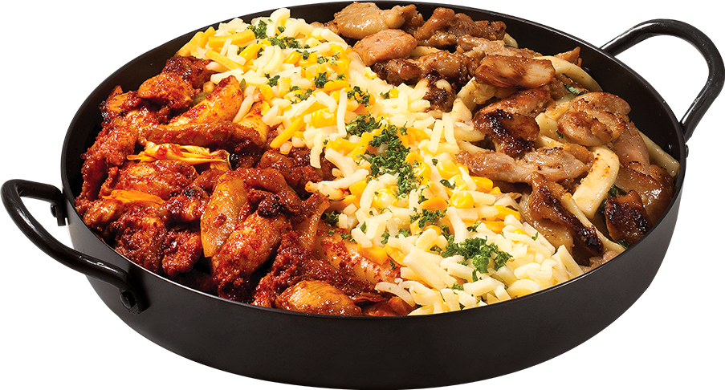
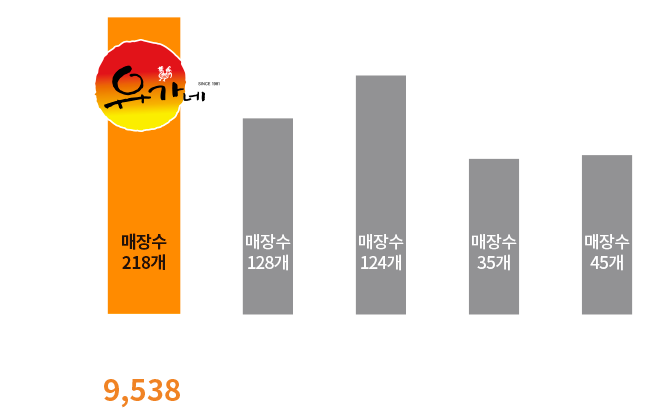
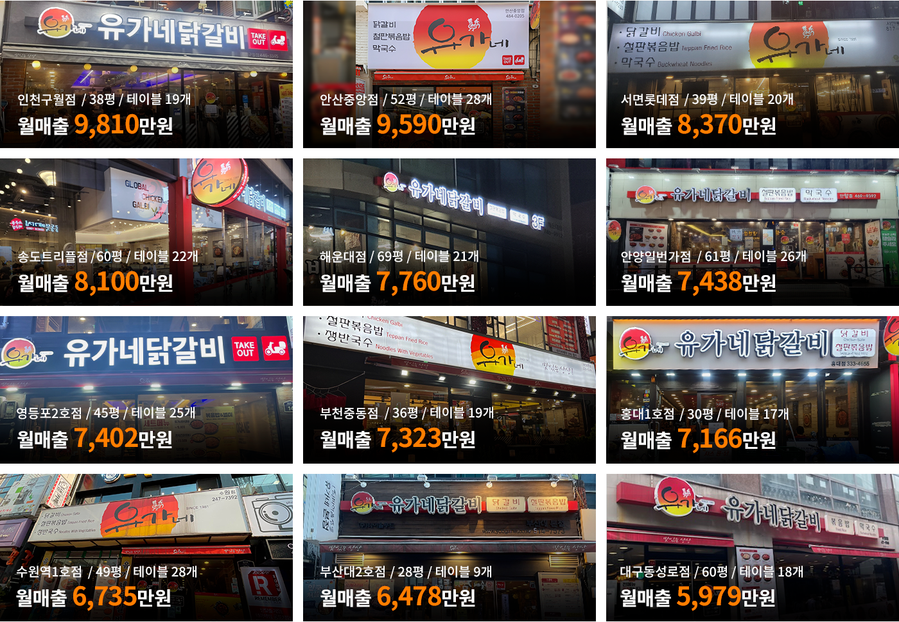
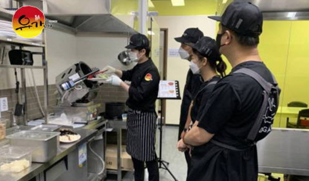
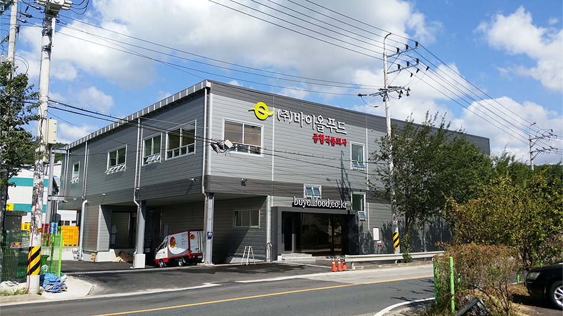
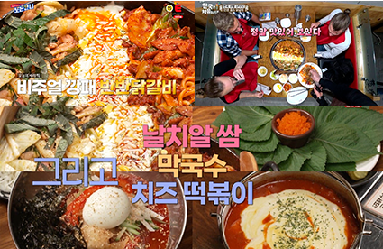
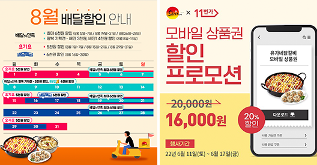
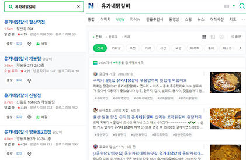
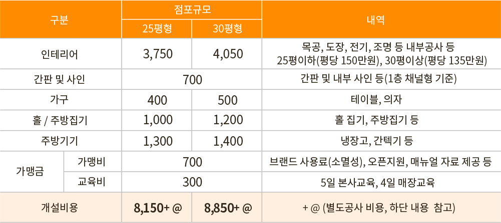
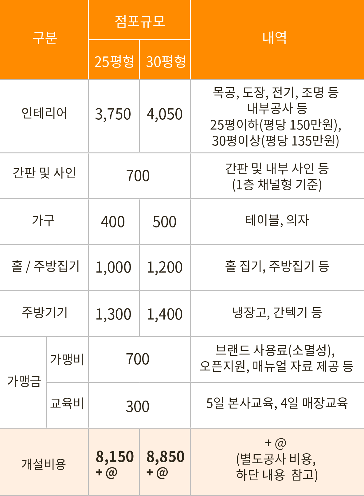

메인비주얼 영역
시간이 흘러도 변함없는
명불허전 1등 닭갈비 브랜드는 다릅니다!
대한민국 1등 닭갈비
#대한민국 1등 닭갈비
명품 브랜드 #유가네닭갈비

춘천닭갈비를 뛰어넘는
유가네닭갈비 인지도
(네이버 Datalab 기준)
전국 220여개 가맹점,
국내 닭갈비 최다 가맹점
5초에 하나씩 팔리는
‘철판 볶음밥’
비슷해 보여도 흉내 낼 수 없는
맛의 깊이가 다른 유가네
(반반닭갈비, 콘치즈닭갈비, 치즈퐁닭)닭갈비 업계1위
객관적인 수치가 증명하는
닭갈비 업계 1위 유가네
면적(3.3㎡당) 평균 매출

※ 공정거래위원회 정보공개서 2020년 기준
닭갈비 업계1위
객관적인 수치가 증명하는
닭갈비 업계 1위 유가네
" 점심, 저녁
모두 OK! "
" 독보적 볶음밥
명품 닭갈비 "

※당사 POS매출 2021년 매장별 월 최고 매출 데이터 기준
다점포율 비결
직접 해 보니 진짜 잘 되더라!
다점포율 30%의 비결
※당사 POS매출 1021년 평균 매출 기준
유가네닭갈비 동영상
직접 해 보니 진짜 잘 되더라!
다점포율 30%의 비결
유가네닭갈비 창업
장사’꾼’을 만들어주는
유가네만의 A to Z 지원 시스템
외식업 초보도 전문가로 만드는
유가네만의 체계적인 교육 시스템
유가네만의 체계적인 교육 시스템
-
실전 맞춤형 매장 운영 교육
- 노무, 메뉴, 프랜차이즈 시스템 등 전반적인 운영 노하우 교육 진행본사 교육
5일 현장 실습
교육 4일 오픈 후
현장 교육
7일 4주간
집중 운영
관리 -
담당SV 밀착 관리를 통한 매장 관리
- 정기적인 매장 진단으로 가맹점 컨설팅 및 가맹점 퀄리티 관리
- 매출 향상을 위한 지역 기반(LSM) 마케팅 지원

HACCP 인증 CK 공장 보유
전국 물류망 시스템 구축을 통한
안정적인 배송 시스템
전국 물류망 시스템 구축을 통한
안정적인 배송 시스템
-
안정적인 물류시스템 구축
- 주 6일 배송을 통한 신선한 식재료 공급 및 재고 부담을 최소화
- 양산 500평 규모의 HACCP 인증 CK공장에서 위생적인 닭갈비 생산 -
업계 최저 식자재 비율
- 27~33% 낮은 식자재로 비율로 가맹점 수익 극대화

점주님은 운영에만 집중하세요! 매출향상을 위한 본사 마케팅 지원

예능 및 드라마 PPL

온, 오프라인 프로모션

스마트플레이스 리뷰 노출, SNS 광고 지원
체계적인 시스템관리
상담부터 오픈까지 체계적인 시스템과 관리
업계최저 수준의 인테리어 평단가시공
가맹점 개설 절차
-
01.개설상담
· 전화 및 홈페이지를 통한 비대면 상담
· 내방 및 출장 상담
· 가맹점 견학 상담
-
02.1차 미팅
· 브랜드 소개 및 입점예정지
입점 가능여부 판단 -
03.점포개발 및 상권조사
· 입점예정지 상권분석 및 타당성 검토
-
04.2차 미팅(인허가 관련 상담)
· 가맹계약 전 영업관련 인허가 사항 체크
· 가맹계약서 및 정보공개서 제공
· 인테리어 실측
-
05.기타 계약체결
· 인테리어 업체 계약
· 도면설계 확인 및 공사견적산출
· 시공일 협의
· 간판견적 산출 및 계약 미팅
· 주방집기 견적산출 및 계약
-
06.3차 미팅(가맹계약 체결)
· 가맹비,교육비,물품보증비 등
해당기관에 예치 -
07.창업자 교육
· 경영이론교육
· 현장실습 및 위생교육
· CS교육
· 사업자등록증, 영업신고증 발급
-
08.시공완료
· 시공 최종 점검
· 주방집기 및 기계 세팅
· 창업자 검수
-
09.최종점검
· 인테리어 시설
· 각종집기
· 초도물품 확인
-
10.오픈준비
· 최종기기 점검 시험가동
· 가 오픈 실시
· 홍보물 제공
-
11.그랜드 오프닝
· 본사 슈퍼바이저 현장지원
· 사후관리
창업비용
  ※ 별도공사 : 익스테리어, 냉·난방기, TV, 전기증설, 가스시공, 분전함, 삿시, 화장실, 덕트, 어닝, 폴딩도어, 철거공사, 소방시설, 공사보험, CCTV, 인허가, POS 등※ 인테리어 평단가 : 시장상황에 따라 변동가능 (EX. 인건비, 자재비 등 금액 인상)
※ 이행보증금 : 300만원 (서울보증보험 증권으로 대체)